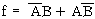
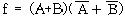
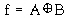
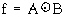
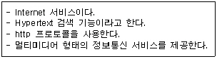

정보기기운용기능사 (2005-04-03 기출문제)
1과목: 전산 기초 이론
1. 다음 중 주기억장치로 사용되는 것은?
- 자기 테이프(Magnetic Tape)
- 자기 디스크(Magnetic Disk)
- 자기 코어(Magnetic Core)
- 자기 드럼(Magnetic Drum)
(정답률: 51%)

2. 다음 중 배타적 OR (Exclusive - OR) Gate의 표현식이 틀린 것은?




(정답률: 56%)
3. 어셈블리어(Assembly Language)를 사용하는 것이 가장 적합한 것은?
- 인사 관리 프로그램
- 수치 계산 프로그램
- 입출력장치 제어 프로그램
- 통계처리 프로그램
(정답률: 64%)
4. 2진수 1000110111을 8진수로 고치면?
- 4334
- 1063
- 1067
- 4331
(정답률: 85%)
5. 출력장치에 해당되지 않는 것은?
- 카드리더
- 모니터
- 라인 프린터
- XY 플로터
(정답률: 76%)
6. 컴퓨터를 더욱 효율적으로 사용하기 위하여 작성된 동작프로그램의 집합과 관계 깊은 것은?
- 시스템 소프트웨어(System Software)
- 스프레드 시트(Spread Sheet)
- 프로그램 언어(Program Language)
- 전자 우편(Electronic Mail)
(정답률: 80%)
7. 컴퓨터의 연산장치에서 수행하는 것은?
- 사칙연산, 시프트, 논리연산
- 시프트, 산술연산, 인터럽트
- 논리연산, 산술연산, 버스제어
- 버스제어, 인터럽트, 산술연산
(정답률: 68%)
8. FLOW CHART를 작성하는 이유로 적당치 않은 것은?
- 처리절차를 일목요연하게 한다.
- 프로그램의 인계인수가 용이하다.
- ERROR 수정이 용이하다.
- 대용량 MEMORY를 사용 할 수 있다.
(정답률: 66%)
9. 전자계산기를 세대별로 분류할때 진공관을 사용하던 세대는 몇 세대라 하는가?
- 제1세대
- 제2세대
- 제3세대
- 제4세대
(정답률: 86%)
10. Encoder에 대한 설명으로 가장 적합한 것은?
- 입력 신호를 2진수로 부호화하는 회로이다.
- 출력 단자에 신호를 보내는 회로이다.
- 2진 부호를 10진 부호로 변환하는 회로이다.
- 입력 신호를 해독하는 해독기이다.
(정답률: 61%)
2과목: 정보 기기 운용
11. 다음 중 컴퓨터의 입출력 장치들만 모은 것은?
- 카드리더, 테이프, 마우스, 라인프린터
- 카드리더, 라인프린터, 레지스터, 콘-솔
- 광학문자판독기, 디스크, 케이블, 다이오드
- 모뎀, 인터페이스 카드, 다중화기, 롬
(정답률: 79%)
12. CATV의 설명으로 적절하지 못한 것은?
- 케이블 TV라고 한다.
- 기존 TV방송보다 채널 수가 많다.
- 헤드앤드가 핵심 구성 요소이다.
- 가입자 설비는 MFC 전화기이다.
(정답률: 79%)
13. 다음 중 광 통신용의 발광 소자는?
- 레이저 다이오드
- 바랙터 다이오드
- PIN 포토 다이오드
- 애벌런쉬 포토 다이오드
(정답률: 84%)
14. 다음 중 타이프 라이터나 프린터로 인쇄된 문자를 광학적으로 판독하는 입력장치는?
- OCR
- MICR
- OMR
- Card Reader
(정답률: 64%)
15. 다음 중 일반 가정용 전기에 흐르는 전류는?
- 직류
- 교류
- 맥류
- 맴돌이 전류
(정답률: 80%)
16. 어떤 전기회로의 부하에 5[A]의 전류를 흘렸을때 500[W]전력이 소모되었다. 이 부하의 저항은 얼마인가?
- 10[Ω]
- 20[Ω]
- 50[Ω]
- 100[Ω]
(정답률: 40%)
17. 개인용 컴퓨터(PC)로 인터넷을 통해 음성 및 화상 통신이 가능하도록 한 전화기는?
- 텔레 텍스트 전화기
- 인터넷 폰
- 팩시밀리
- 음향 결합기
(정답률: 81%)
18. 회선종단장치(DCE) 중 디지털 회선에 사용되는 회선종단장치는?
- 모뎀
- DSU
- LAN
- DTE
(정답률: 55%)
19. 오퍼레이팅시스템의 목적을 설명한 것중 거리가 먼 것은?
- 오퍼레이터의 작업 능률 향상
- 사용 응답 시간 단축
- 처리 능력의 향상
- 사용 가능도의 향상
(정답률: 46%)
20. 3[A]전류가 30분간 흐르면 이 동안의 전기량은 얼마인가?
- 3800 [C]
- 5400 [C]
- 4800 [C]
- 5200 [C]
(정답률: 69%)
21. 주기억장치와 CPU의 속도차가 크므로 인스트럭션의 수행속도를 CPU의 속도와 맞추기 위하여 운용하는 장치는?
- 레지스터(Register)
- 가산기(ADDER)
- 캐시메모리(Cache Memory)
- 누산기(Accumurator)
(정답률: 76%)
22. 다음 교류 전압 V=100sin 120π t 에서 주파수 f[Hz]는?
- 120
- 100
- 60
- 30
(정답률: 58%)
23. 다음 중 모뎀을 쓰지 않는 근거리 통신의 경우 손실이 가장 적은 선은?
- 동축케이블
- Feeder Line(피더선)
- 연선
- 전화선
(정답률: 79%)
24. 부트 바이러스에 감염된 것으로 보이는 증상으로 가장 타당한 것은?
- 실행 날짜가 최근으로 바뀌었다.
- 사용 가능한 메모리 및 디스크의 용량이 줄어든다.
- 실행 파일이 부분적으로 훼손되어 프로그램이 실행되지 않는다.
- 파일을 실행시킬 때 LOAD 하는 시간이 평상시보다 오래걸린다.
(정답률: 47%)
25. 금요일이 되는 13일에만 작동하는 바이러스(Virus)는?
- 미켈란젤로 바이러스
- 예루살렘 바이러스
- 브레인 바이러스
- 1571 바이러스
(정답률: 76%)
26. 바이러스 증식을 막는 방법이 아닌 것은?
- 감염된 파일의 바이러스를 제거시킨다.
- 실행파일의 확장자를 비실행 확장자로 바꾼다.
- 디스크상의 파일을 검사한다.
- 프로그램을 실행시킬 때 Checksum을 비교한다.
(정답률: 76%)
27. 컴퓨터를 사용할 때 발생할 수 있는 바이러스의 예방 방법으로 적절하지 못한 것은?
- 바이러스의 예방 방법을 알아둔다.
- 불법 복제 프로그램을 사용하지 않는다.
- 백신 프로그램을 설치한다.
- 첨부 파일은 무조건 수신한다.
(정답률: 88%)
28. 정보기기운용, 보전관리를 위한 작업계획에 포함되지 않는 것은?
- 회선이나 시설의 불량상태
- 계절적, 지역적인 특수사정
- 운용보전 서비스의 기준치 달성목표
- 작업자의 태도 및 노조가입여부
(정답률: 76%)
29. 그림, 챠트, 설계도면, 도형을 디지털화 하여 컴퓨터에 입력시키는 장치는?
- 디지타이저
- 조이스틱
- CRT
- XY플로터
(정답률: 73%)
30. 12[㏀]의 저항 양단에 60[V]의 전압을 가하면 몇[㎃]의 전류가 흐르는가?
- 0.2
- 5
- 500
- 720
(정답률: 58%)
3과목: 정보 통신 일반
31. 데이터전송시스템에서 순간적으로 일어나는 높은 진폭의 잡음은?
- 백색잡음
- 충격성 잡음
- 후리커잡음
- 상호 변조잡음
(정답률: 74%)
32. 다음 중 RS-232C 표준 인터페이스 케이블은 몇 개의 핀으로 구성되어 있는가?
- 10
- 15
- 25
- 37
(정답률: 82%)
33. 캐리어 신호(carrier signal)의 피크 투 피크(Peak To Peak) 전압이 전송하는 신호의 크기에 따라 변하는 변조방식은?
- 진폭 변조
- 주파수 변조
- 위상 변조
- 파장 변조
(정답률: 59%)
34. 광통신 케이블의 장점이 아닌 것은?
- 중계급 전선 필요
- 잡음의 영향 감소
- 대용량 전송
- 누화방지
(정답률: 70%)
35. PCM 통신방식에서 PAM 신호를 허용된 몇 단계의 레벨 값으로 근사화 시키는 과정은?
- 양자화
- 부호화
- 표본화
- 다중화
(정답률: 48%)
36. 4위상 변조를 하여 데이터를 전송하는데 신호의 전송속도가 60보오(Baud)라 할 때, 이것을 bps 속도로 나타내면 얼마인가?
- 60
- 120
- 200
- 240
(정답률: 64%)
37. 다음 설명이 나타내는 것은?

- TCP/IP
- ISDN
- PDA
- WWW
(정답률: 69%)
38. 통신망 중 방송망으로 이용되지 않는 것은?
- 패킷 라디오망
- 인공 위성망
- 근거리 통신망
- 메시지 교환망
(정답률: 69%)
39. LAN의 이점이라고 볼 수 없는 것은?
- 고속의 정보전송이 가능하다.
- 다른 정보통신기기와도 통신이 가능하다.
- 외부 통신망의 제약을 받지 않는다.
- 방송 형태로 서비스 이용이 불가능하다.
(정답률: 78%)
40. 데이터통신시스템의 기본 구성 요소가 아닌 것은?
- 전송회선
- 단말장치
- 원격장치
- 중앙처리장치
(정답률: 56%)
41. 성(Star)형 통신망의 설명으로 가장 거리가 먼 것은?
- 중앙 집중식이다.
- 통신망의 기본적인 형태이다.
- 통신회선이 많이 필요하다.
- 중앙의 컴퓨터가 고장이 나도 전체 시스템의 다운(Down)은 없다.
(정답률: 78%)
42. 저속도에서 주로 사용되는 변복조기는?
- 비동기식 변복조기
- 동기식 변복조기
- 광대역 변복조기
- 멀티포트 변복조기
(정답률: 79%)
43. 데이터통신의 특성과는 관련이 먼 것은?
- 디지털 형태의 데이터를 목적물로 하는 통신으로 컴퓨터 통신이라고 한다.
- 데이터의 전송과 처리를 소정의 목적을 위하여 유기적으로 결합하여 새로운 시스템으로 구성한 통신이다.
- 통신회선을 통하여 전화로 대화를 하는 방식이다.
- 기계와 기계사이에 디지털 2진형태로 표현된 정보를 송수신하는 통신이다.
(정답률: 62%)
44. ITU-T X.25는 무엇을 권고하고 있는가?
- 공중 데이터 네트워크에서의 패킷 분해/조립 장치
- 공중전화망에서 동기식 전송을 위한 DTE와 DCE 사이의 접속규격
- 공중 데이터 네트워크에서 패킷형 터미널을 위한 DCE와 DTE 사이의 접속규격
- 국내의 동일 PSTN에 연결하기 위한 DTE/DCE 접속규격
(정답률: 60%)
45. 등화기(Equalizer)를 가장 잘 설명한 것은?
- 송신측과 수신측에서 서로 신호의 레벨을 같게 하는 것이다.
- 누화를 방지하기 위한 장치이다.
- 잡음의 발생 유무를 감지하기 위한 장치이다.
- 진폭 및 위상왜곡을 보상하기 위한 장치이다.
(정답률: 45%)
46. 푸시버튼 다이얼 전화기를 MFC 전화기라고 한다. 이 MFC는 무엇을 나타내는가?
- 고군주파수신호방식
- 저군주파수신호방식
- 단일주파수신호방식
- 다주파코드신호방식
(정답률: 54%)
47. TV 방송망을 통하여 많은 이용자에게 정보를 단일 방향으로만 제공이 가능한 미디어는?
- VIDEOTEX
- INTERNET
- TELETEXT
- EDI
(정답률: 61%)
48. 주파수분할 다중통신에서 각각의 신호를 추출하기 위해서는 무엇을 통과해야 하는가?
- 표준화회로
- 저역감쇠기
- 동기신호발생기
- 대역여파기
(정답률: 42%)
49. 단말장치에서 Message 출력도중 Host로 입력신호를 보낼수 있는 통신회선의 형태는?
- Full-Duplex 회선
- Triplex 회선
- Simplex 회선
- Half-Duplex 회선
(정답률: 55%)
50. 메시지통신시스템(MHS)의 설명으로 적합하지 않은 것은?
- 전자메일 서비스의 일종이다.
- 패킷교환방식으로 운용된다.
- 컴퓨터의 축적처리 기능을 이용한 것이다.
- 메시지의 양방향 송·수신이 가능하다.
(정답률: 48%)
4과목: 정보 통신 업무 규정
51. 국가기관 지방자치단체의 정보화촉진 등을 지원하고 정보화 관련 정책개발을 지원하기 위하여 설립한 기관은?
- 한국전산원
- 한국전자통신연구원
- 한국정보산업연합회
- 정보통신정책심의회
(정답률: 32%)
52. 전기통신설비는 이용자에게 안전하고 신뢰성있는 전기통신업무를 제공할 수 있도록 누가 정하여 고시하는 기준에 적합하여야 하는가?
- 정보통신부장관
- 산업자원부장관
- 기간통신사업자
- 한국통신사장
(정답률: 84%)
53. 정보통신서비스 제공사업을 영위하는 사업자 및 그 종업원들이 준수하여야 할 사항으로 적합하지 않은 것은?
- 국가의 안전을 위태롭게 하여서는 아니된다.
- 정보화사회 조성을 위한 금융 지원을 하여야 한다.
- 미풍양속을 해치지 않아야 한다.
- 국가경제질서를 파괴하는 행위를 하지 않아야 한다.
(정답률: 76%)
54. 전기통신기본법의 궁극적인 목적은?
- 공공복리의 증진
- 통신사업자의 경쟁력 강화
- 국가경쟁력 강화
- 통신선진국 진입 도모
(정답률: 66%)
55. 전기통신설비의 기술기준에서 정의하는 강전류전선이란 몇 볼트 이상의 전력을 송전하거나 배전하는 전선을 말하는가?
- 110[V]
- 220[V]
- 300[V]
- 600[V]
(정답률: 78%)
56. 다음 중 정보통신역무제공업자가 개인의 사생활에 관한 정보를 보관하는 방법으로 가장 적합한 것은?
- 일반 정보자료와 동일하게 보관한다.
- 전용보관함에 넣고 시건장치로 보관한다.
- 야간에 한해서 이용하도록 보관한다.
- 공휴일에 한해서 이용하도록 보관한다.
(정답률: 78%)
57. 전기통신설비의 기술기준에 관한 규칙의 적용범위가 아닌것은?
- 전기통신설비
- 전기통신회선설비
- 전기통신기자재
- 소프트웨어 설치
(정답률: 74%)
58. 다음 설명 중 틀린 것은?
- 저주파수라 함은 300Hz 미만의 주파수를 말한다.
- 음성주파수라 함은 300Hz 이상 3400Hz 이하의 주파수를말한다.
- 절대레벨 단위는 dBm 이다.
- 고주파수라 함은 3400Hz 미만의 주파수를 말한다.
(정답률: 63%)
59. 전기통신에 관한 기술의 표준화업무를 행하는 기구는?
- 한국전자통신연구원
- 한국통신
- 한국정보통신기술협회
- 한국정보문화센타
(정답률: 77%)
60. 정보통신부장관이 기간통신사업을 허가하려고 할 때 심의를 하는 기관은?
- 통신위원회
- 한국통신
- 전파연구소
- 정보통신정책심의위원회
(정답률: 60%)